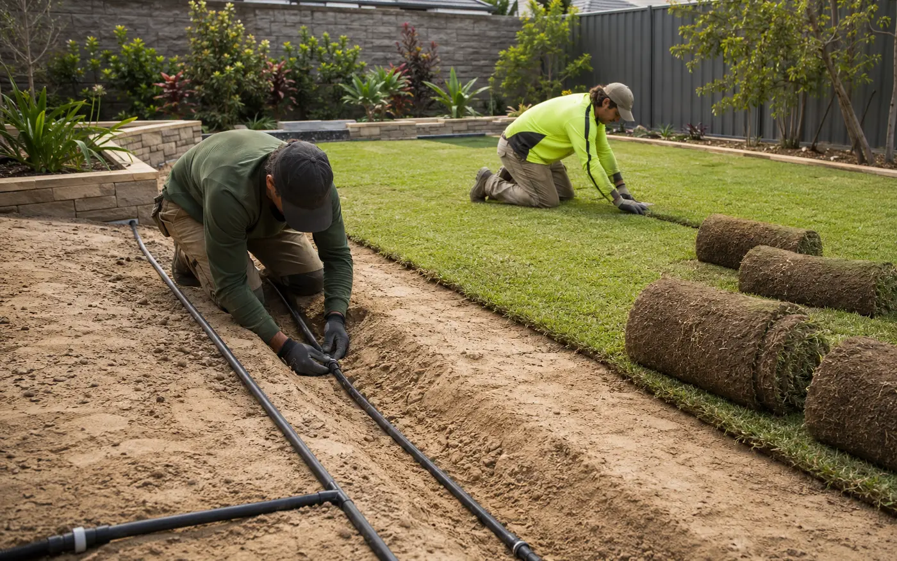
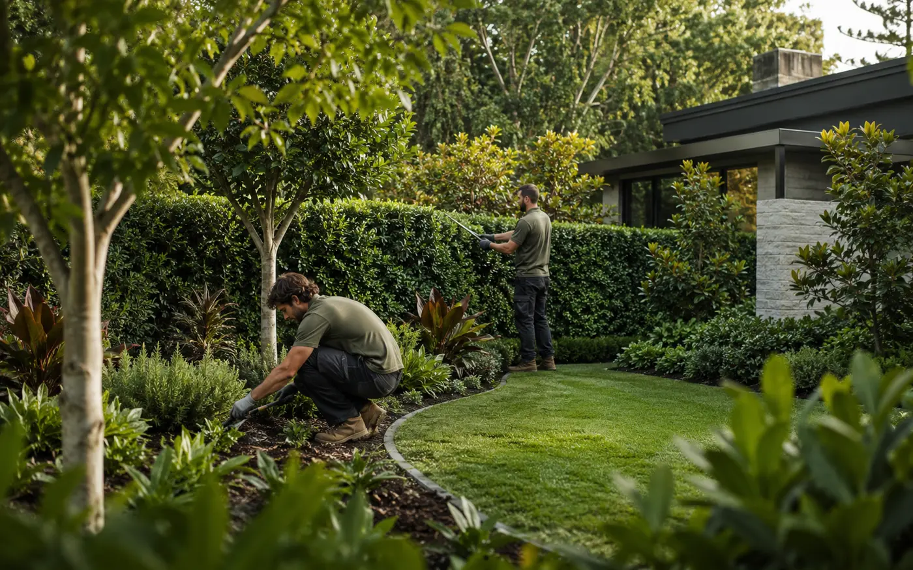
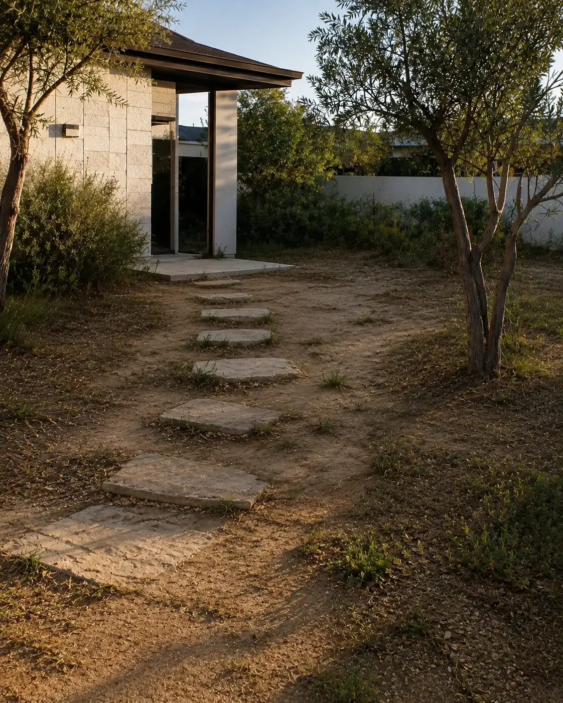

A successful landscape is not only attractive on completion day. It
should create clearer movement, more useful zones and a realistic
relationship between materials, planting, water and maintenance.
Every project is shaped around the property, the way the space will
be used and the level of ongoing care that suits the owner. Explore
the decisions behind each landscape direction below.
BeforeUnderstand the limitation, missed opportunity or site
problem.
ResponseConnect the design and construction decisions to the
property.
AfterShow the practical difference as well as the visual
finish.
Featured demo transformation
From empty yard to purpose-built outdoors.
Demo project 01 · Perth residential concept · garden makeover,
paving, turf and planting. Replace with verified suburb, scope,
constraints and result.
Demo beforeUnderused backyardDemo afterPurpose-built outdoor space
Between before and after
The work behind the finished landscape.
This sequence illustrates how preparation, installation and care can
fit into a complete landscaping journey. Exact stages depend on the
site and agreed scope.
01Prepare the siteAccess, clearing, levels and ground conditions are reviewed
around the agreed scope.
02Build the foundationPreparation, compaction, falls and transitions support the
selected surface.

03Install and establishWatering, prepared soil and turf are coordinated before
early-care handover.

04Care for the resultPruning, bed care and presentation help the landscape develop
beyond handover.
Demo project stories
Three landscape directions.
Each example shows the structure for a qualified case study:
starting condition, delivery response and finished direction. Select
a stage to see the demonstration content.

Demo project 02 · Waterwise arrival garden
A sparse entrance without direction.
Demo starting condition: compacted sandy soil, disconnected
stepping slabs and little planting structure leave the arrival
garden exposed and difficult to enjoy.